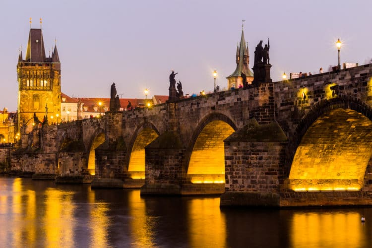

Тур в Прагу

Загадочная, чарующая, волшебная Прага — вот так кратко можно выразить впечатления от знакомства с этим чешским городом, но никакие эпитеты не передадут эмоций, полученных лично от прогулок по исторической части города, овеянной многовековыми тайнами, от посещения монументальных готических соборов и величественных замков, роскошных дворцов и богатых музеев. Вы всегда найдёте что посмотреть в Праге, даже если вы уже искушённый поклонник этого города, оказавшийся здесь не в первый раз. Знакомство с Прагой можно продолжать бесконечно - город имеет свой магнетический шарм, а достопримечательности Праги - это одна огромная сокровищница, которая вмещает многие исторические вехи жизни чешской столицы.
Что посмотреть в Праге в первую очередь?
Гостей Праги ждёт такое разнообразие экскурсионных программ, что подчас немудрено потеряться в этом изобилии. Каждый, предвкушая будущие приключения, ищет что посмотреть в Праге за 1 день, или планирует продолжительное путешествие. Так или иначе, очень важно заранее подготовиться к поездке, чтобы она оправдала и превзошла все ожидания.1. Карлов мост
Обзор открывает один из главных символов Праги, Карлов мост — 520-метровая конструкция, позволяющая перебраться на другой берег через воды пражской реки Влтавы. История моста началась несколько столетий назад, в 14 веке, поэтому с этим сооружением связано множество памятных событий. К примеру, именно через этот мост проходил Королевский путь, по которому чешские монархи прибывали на коронацию. Сегодня же мост является важнейшим туристическим пунктом, поскольку соединяет два важнейших исторических квартала Праги, где сосредоточена масса городских достопримечательностей.
2. Вацлавская площадь
Это место можно назвать сердцем Праги — Вацлавская площадь находится в самом центре города и выполняет первенствующую роль как для народных гуляний и массовых праздников, так и в качестве знаковой достопримечательности города. Не перечесть важнейших событий, которые повидало на своём веку это место: здесь было объявлено об окончании Второй Мировой войны, здесь встречали Юрия Гагарина с «Миссией мира», здесь проходили важнейшие митинги, и по сей день здесь назначаются встречи и проходят демонстрации. Площадь окружена множеством исторических памятников, на которых даже есть мемориальные доски с информацией, какие события с ними связаны.
3. Староместская площадь

Выбирая, куда сходить в Праге, стоит попасть ещё на одну площадь города, расположенную в историческом районе Старе-Место. Это Староместская площадь, известная ещё с 12 века. Когда-то на площади кипела рыночная жизнь, здесь собирались многочисленные торговцы, ремесленники, купцы с разных стран. А сегодня на ней проводятся массовые гуляния, проходят ярмарки и фестивали. Здесь также можно запастись памятными сувенирами, а с высокой башни — полюбоваться панорамой города, которая раскрывается оттуда во всей своей красе.
4. Староместская ратуша
Переходя от общего к частному, невозможно обойти вниманием комплекс исторических построек на Староместской площади, именуемых Староместской ратушей. Эти здания служили потребностям органов самоуправления Старого города. В 1338 году властями был выкуплен каменный дом купца Вольфа Камене, а позже начались работы по расширению ратуши, выкупались и достраивались новые помещения, и венцом этих творений стали Астрономические часы, возведённые на Староместской башне — уникальный технический шедевр, отражающий удивительно тонкую работу средневековых мастеров.
5. Тынский храм
Топ лучших достопримечательностей Праги продолжает главный католический храм города, расположенный в в том же районе Старе Место. Тынский храм во имя Девы Марии — необыкновенное сооружение в готическом стиле с элементами барокко, которое величественно возвышается над красными черепичными крышами староместских зданий. Башни храма увенчаны угловыми башенками, что придаёт ему некоторую сказочность и даже мистичность. Особого внимания заслуживает внутреннее убранство: храм вмещает целых 19 алтарей, украшенных в разные годы, начиная с середины 14 века, а также многовековую оловянную купель и более десятка исторических полотен.
6. Пражский град
Ещё один древний символ Чехии, отражающий тысячелетнюю историю государства, находится в другом историческим районе — Градчанах. Это Пражский град — величайший замковый комплекс во всём мире. История уникального памятника старины начинается в далёком 9 веке, наиболее активное строительство разворачивается в 14 веке, и лишь в 20 веке Град распахнул свои врата для посетителей. Вся его территория включает три двора: в первый ведут Врата Гигантов — главный вход в комплекс, во второй ведёт триумфальная арка — Матиашовы Врата, а третий двор — самый просторный и старый в комплексе, где сосредоточена основная масса старинных достопримечательностей, начиная с 9 века.
7. Старый королевский дворец
Все экскурсии в Прагу, включающие посещение Пражского града, непременно включают важнейший его объект — Старый королевский дворец. Именно отсюда осуществлялось управление страной на протяжении всей её истории, именно здесь располагалась резиденция многих чешских монархов и богемских князей, а сегодня здесь проходят выборы чешских президентов. История архитектурного преобразования дворца удивительна — из простой деревянной постройки дворец прошёл все мыслимые архитектурные стили, от готического и романского, до ренессанса и барокко. Сегодня дворец представляет собой один огромный музей, включающий цепь исторических залов.
8. Летний дворец королевы Анны
Следующий важный объект Пражского града — романтичный летний дворец, ставший подарком короля Фердинанда I его супруге Анне. Увы, подарку не суждено было осуществиться, т.к. Анна нескольких лет не дожила до завершения строительства дворца. Сооружение было оформлено в стиле ренессанс, фасад дворца окружают аркады из 36 тосканских колонн, а их карнизы украшены рельефами мифологической тематики. Дополняет это изысканное архитектурное творение прекрасный Королевский сад в стиле барокко, с декоративными деревьями, фонтанами, вьющимися дорожками и зелёными полянами.
9. Крепость Вышеград
К югу от центра Праги на холме располагается другой исторический район — Вышеград, на котором возвышается одноимённая крепость. Посещение крепости Вышеград — ещё один способ увидеть и посетить многовековые исторические постройки Праги. Сама крепость, согласно историческим данным, была сооружена ещё в 10 веке. Зачастую это место обходят вниманием, отдавая предпочтение Пражскому Граду, а вместе с тем, в Вышеграде есть свои бесценные памятники старины — например, красивейший собор в неоготическом стиле, кладбище с могилами нескольких сотен выдающихся личностей Праги, ротонда 11 века или Вышеградские казематы — сложная система подземных тоннелей.
10. Тройский замок
Тройский замок — это изящный дворцовый комплекс в стиле барокко, словно бы сошедший с картинки. Располагается он в пражском районе Троя. Это и загородная резиденция, и музей с уникальной коллекцией вин, и аккуратный творчески спроектированный парк — одним словом, ещё одно красивое место, которое рекомендуется посетить в Праге. Дворец был построен в 17 веке по распоряжению графа Штернберга, в связи с чем он долгое время выполнял роль резиденции старейшего рода Штернбергов. Главная гордость замка — его Императорский зал с многочисленными цветными фресками, передающими сюжеты османской битвы.